Local COVID data
Brian O’Meara
Here are notes and links I personally find useful, all gathered in one place. Mostly, I kept looking at webcams to see whether people are practicing social distancing and decided to put them all in one page. I also gather data when nervous, so I also have plots of things like testing, activity, and cases over time so I can see the info directly myself (for example, Knox County Health Department plots cases per day with a trendline, but so far their trendline is only a straight line - I was curious if a more flexible fitting might be more informative). I am not an epidemiologist, so please do not draw any advice from this page (and I’ve been careful NOT to do projections or anything like that – there is a lot that goes into modeling, see this video by my colleague Nina Fefferman, who unlike me is an expert in this, for more on models). This is just me poking around with the data to make myself feel better – the raw code is here if you’d like to examine it yourself.
Other sources for data and other information:
- UTK coronavirus information. See especially the current task force report.
- Knox County data. This also includes info about Knox’s reopening plan and the benchmarks they’re using
- Inside of Knoxville has reporting out of every health board meeting and other local news.
- Knoxville News Sentinel is our remaining local paper (though some of its staff have been furloughed) and it covers covid in Knoxville and Knox County.
- Projections for Tennessee
- Covid ActNow aggregate of information, including contact tracing, infection rate, and more
- COVID-19 phylogeny. Family tree of the COVID-19 viruses around the world. This can be used by experts to understand how the disease has spread and is continuing to spread, as well as possible evolution during its spread.
- ProPublica’s tracker of state status. Click on the play button below their map to see how rates are changing over time, and dig into info on your state.
- Tennessee Downloadable Datasets
- Alex Zukowski’s UTK dashboard, including testing numbers that are available due to his work requesting them
- Matthew Martin’s UTK dashboard
- US HHS hospitalization by facility
The following plots are created in R using data from https://covid19datahub.io (Guidotti, E., Ardia, D., (2020), “COVID-19 Data Hub”, Working paper, doi: 10.13140/RG.2.2.11649.81763), as well as information from Google and the state of Tennessee dataset page and plotting and analysis using the forecast, ggplot2, reshape2, and dplyr packages. Plots created on 2021-07-17 05:59:26. I use a seven day rolling average for most plots using the geom_ma function of tidyquant.
Cases
The number of new should be not be going up if things are well-controlled, and ideally should be going down. I used to plot active cases, but how those are tracked has changed (it used to be based on recoveries, now it’s just a two weeek lag of active). This uses data from https://www.tn.gov/health/cedep/ncov/data/downloadable-datasets.html. The number of new cases per day seems to align fairly well, but not perfectly, between the state and county data.
I plot five regions (though for simplicity, for some of the plots I omit East TN, and regions with no data automatically do not get plotted for certain measures)
- Knox County (which includes Knoxville)
- Anderson & Roane Counties, which include the town of Oak Ridge
- East TN (the 14 counties that have acute care hospitals in Knox County/East Region according to Knox County)
- UTK Student Testing, from tests done at the UTK student health center
- UTK Reported, from all cases UT includes on their dashboard (student cases from the health center, cases reported from tests off campus that are communicated)
Information from the last two datasets comes from the hard work of Alex Zukowski, who requests the testing data and who aggregates the reported data. Zukowski, Taylor A. “University of Tennessee, Knoxville COVID-19 Dataset.” COVID-19 in The University of Tennessee, Knoxville, 2020, sites.google.com/view/utk-covid19/data. I recommend going to https://sites.google.com/view/utk-covid19 for more on this dataset and the work going into gathering it.
Summary table
We can summarize all this information into a table showing the percentage of different populations who have gotten covid, died from covid, and been vaccinated against it to check for disparities. In many categories there is a substantial unknown, so the numbers in those areas might be low: for example, if 20% of the people being vaccinated have no race recorded, then adding up all the proportion of people in the race categories who are vaccinated will be lower than the total vaccinated. This is why, for example, the proportion of people with positive covid tests by race is lower than any grouping by sex: there are a lot more unknowns in the race category, and I don’t want to assume that the distribution of the unknowns matches the distribution of knowns. I am also treating as unknown categories that seem to have issues, such as mulitracial (very different count by the census than by the TN data) and other for sex in some data (gender is a spectrum, but the available data treat it as binary usually and call it sex; I follow this convention in the source data).
| Category | Group | Positive Covid Test | Covid Death | At Least One Vaccination | Fully Vaccinated |
|---|---|---|---|---|---|
| Race | American Indian or Alaska Native | 3.5% | 0.04% | ||
| Race | Asian | 5.8% | 0.06% | 45.2% | 39% |
| Race | Black or African American | 10.2% | 0.19% | 28.9% | 24.4% |
| Race | Native Hawaiian or Other Pacific Islander | 9.6% | 0.1% | ||
| Race | White | 10.3% | 0.18% | 34.5% | 31.4% |
| Ethnicity | Hispanic | 13.6% | 0.08% | 37.7% | 31.2% |
| Ethnicity | Not Hispanic or Latino | 9.3% | 0.18% | 38.1% | 34.5% |
| Sex | Female | 13.3% | 0.17% | 46% | 41.4% |
| Sex | Male | 12.1% | 0.2% | 39.1% | 34.9% |
Vaccination
Tennessee releases information on demographics of individuals getting vaccinated. All terminology follows that used by the state, including terms like race and sex.


 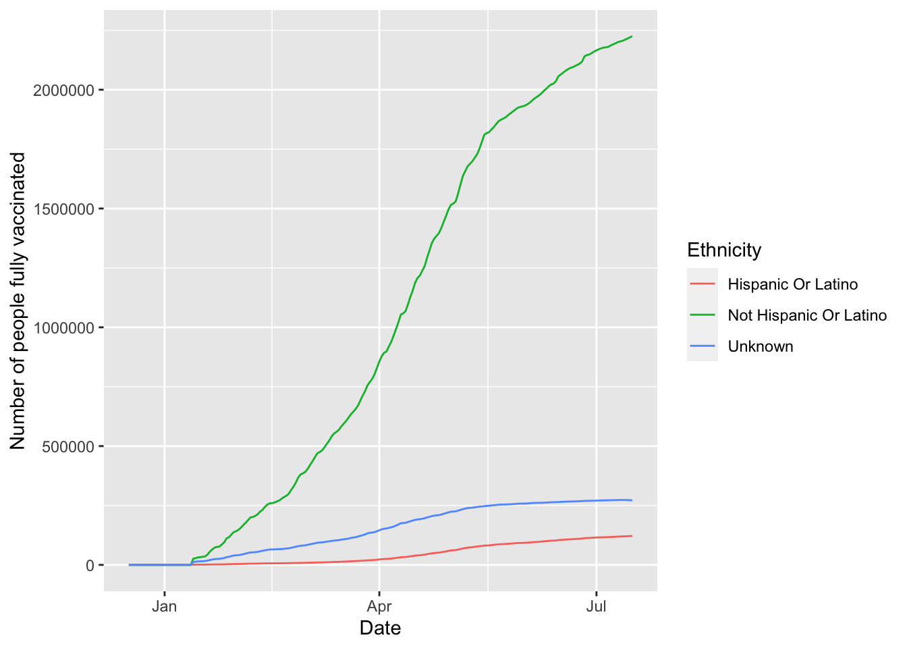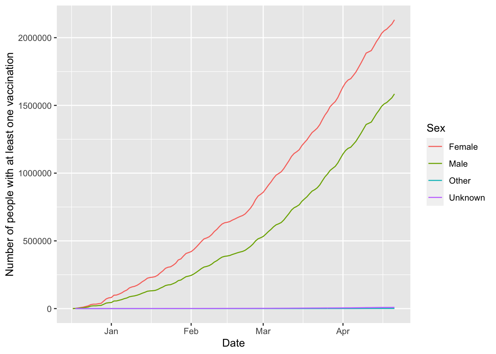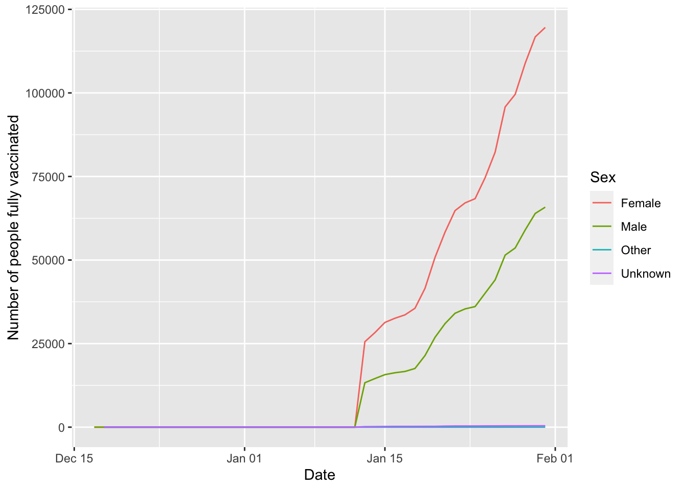
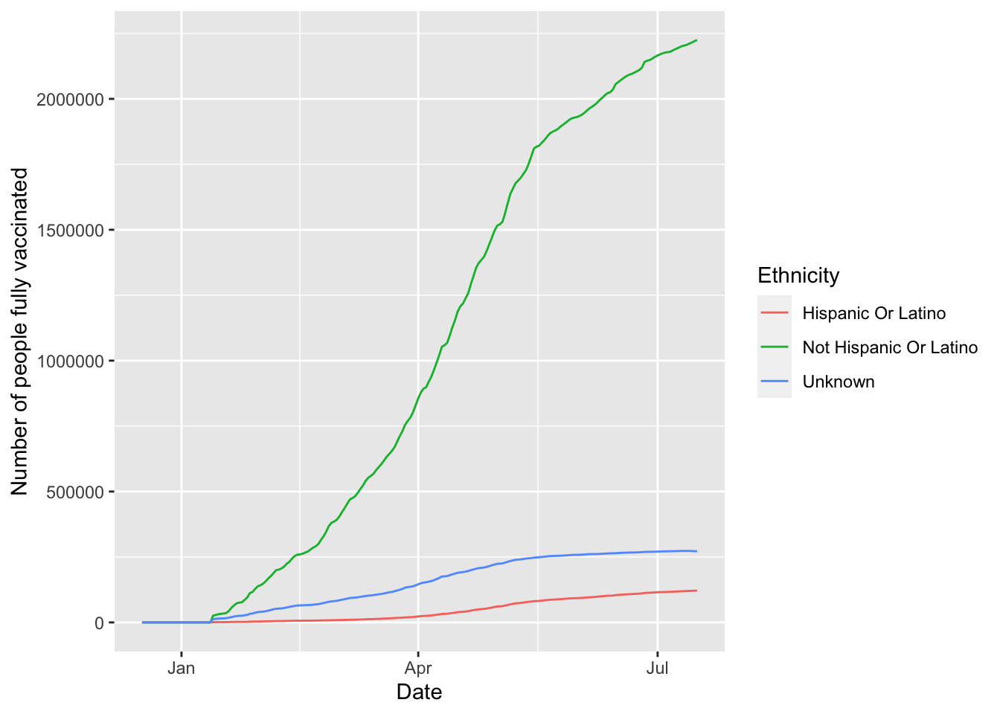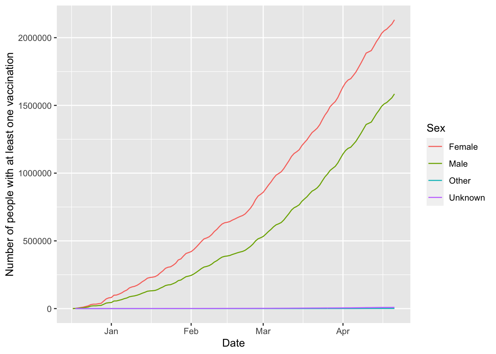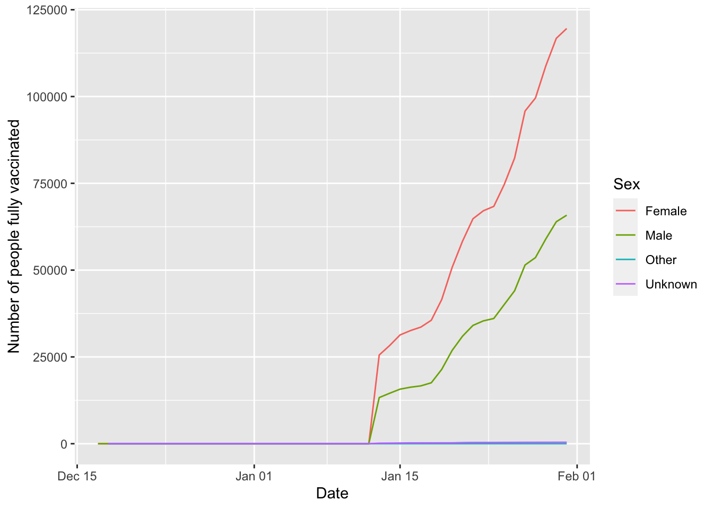
Cases locally
This shows cases locally. I’m zooming in on the most recent months: the huge peak around January 2021 obscures the current dynamics otherwise.

This shows the plot of percent of positive tests per week.

Tennessee now breaks out covid test results for school age children (age 5-18). The number of tests in this age group and the underlying population size aren’t known to me, so things like positivity rate and proportion of students infected cannot be determined, but the raw number of students infected can be shown (doing a seven day average):
 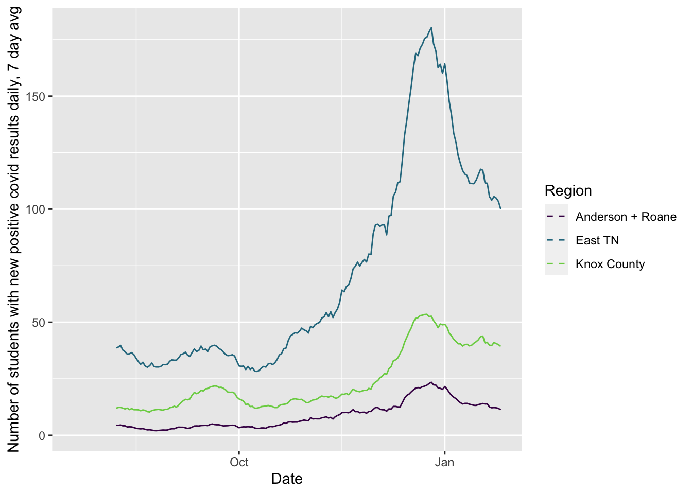
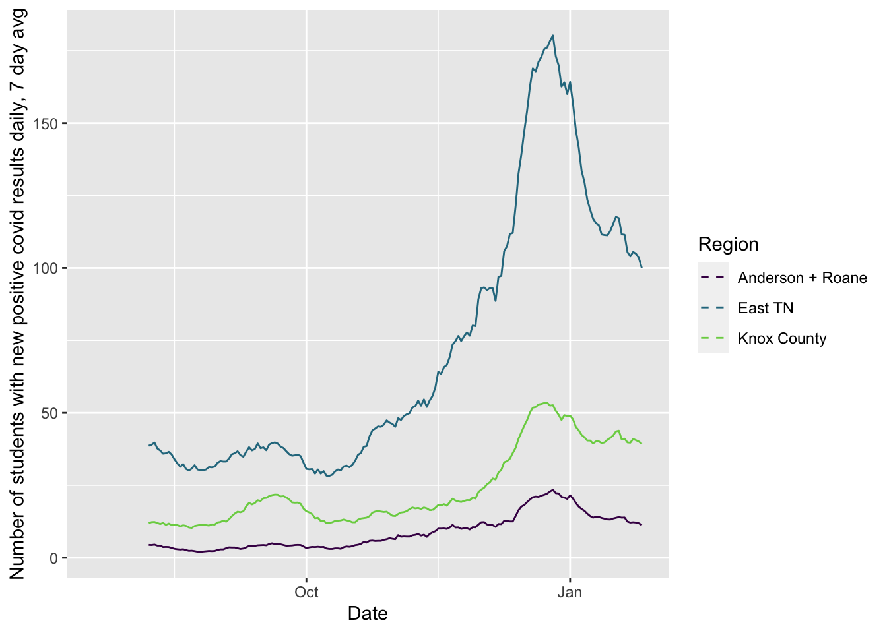
Hospitalization
As of the last time the data were updated (likely 3 days ago), regional hospitals had 18 ICU beds available of 317 total (so was at 94 percent capacity), and 294 available ventilators out of 419 total, (so was at 30 percent capacity). The hospitals overall had 447 beds available of 3081 total (so was at 85 percent capacity). This is based on 19 acute care hospitals in the East TN region; based on the 14 counties these hospitals are in, these serve at least 1,235,720 people. When a line hits 100% (indicated in red), the local hospitals are theoretically full for that resource (for all patients, not just covid patients), though there is surge capacity on top of this. Note that these data are updated only weekly, so current conditions maybe be much better or worse than these plots show. Data on capacity from Knox County’s dashboard, data on hospitalizations and testing over time from the state data.

Trends in hospitalization of covid patients over time. The vertical dotted line shows the last day with updated capacity information from Knox County, when there were 18 ICU beds available (ignoring surge capacity) for people in the East Tennessee region. The seven day average is shown.

In December 2020, California instituted a new policy of going to shutdowns in regions when ICUs get filled above 85% capacity. When this happens, “Affected communities will be required to close personal service businesses, including hair and nail salons, playgrounds, zoos, museums, aquariums and wineries. Overnight, short-term stays at campgrounds would be prohibited. Restaurants will be required to return to take-out service only. Retail businesses will be limited to 20% of their customer capacity inside at any one time, with requirements for store officials to ensure there’s no indoor drinking or eating.” according to an article in the LA times. Tennessee is not bound by California’s rules, but we can plot our region’s hospital capacity and see how the current outbreak compares. Blue shows California’s threshold for shutting down many things like dining in restaurants; red shows full capacity for our region, when every bed is full (ignoring any surge capacity):
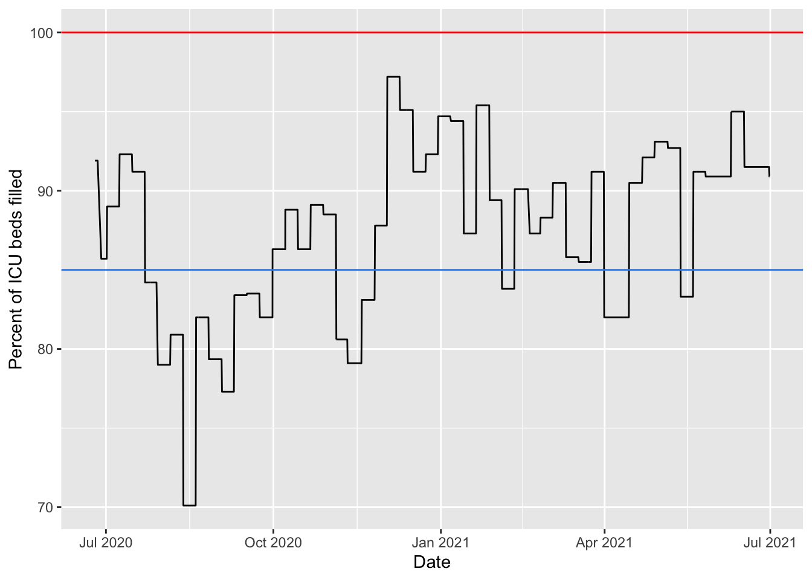
US Health and Human Services is now releasing data on hospital occupancy by hospital. For more, see here. I’m showing all the hospitals in east Tennessee that have at least a couple of updates in the HHS database (some tiny hospitals apparently rarely update this info). These data are for the week starting 2021-07-02. The first table is the capacity at various local hospitals, looking at just outpatient beds. These are weekly averages: there could be fluctuations over the week in bed occupancy and even in number of beds available, and they don’t necessarily mean this is what one can expect at hospitals today. Perhaps the most striking is the “Adult ICU number avail”: how many beds in the ICU were available, on average, over the week starting 2021-07-02 at various local hospitals, which ranged from 3 to at most 3 beds.
| Hospital | City | Adult beds total | Adult beds number avail | Adult beds % avail | Adult ICU total | Adult ICU number avail | Adult ICU % avail |
|---|---|---|---|---|---|---|---|
| Sweetwater Hospital Association | Sweetwater | 60 | 28 | 46 | 7 | 3 | 39 |
These plots stack all the adult ICU beds available in all regional hospitals, grouping by city.
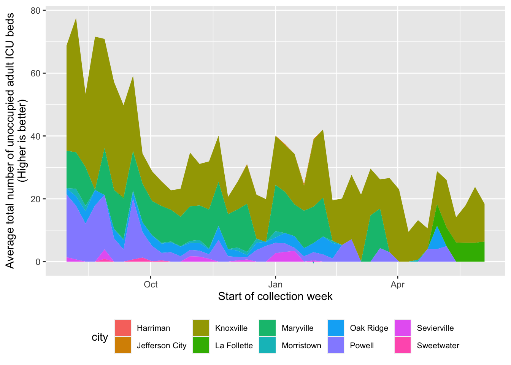
There is also data on the individual hospitals. I’m showing the percentage of adult ICU beds filled per hospital (higher is worse).
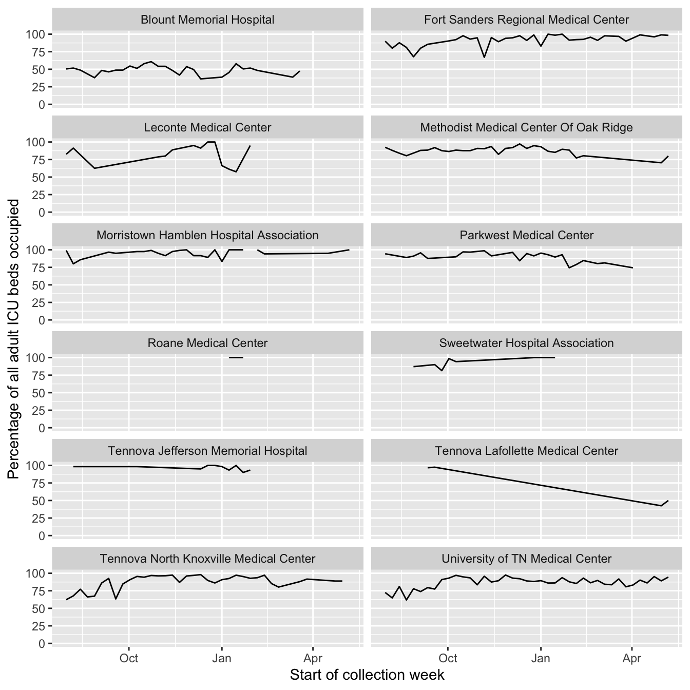
Finally, we can break out the percentage of patients in the beds (all adult outpatient and adult ICU) who have confirmed or suspected covid. That does not mean that covid is their primary reason (or reason at all) for being in the hospital, but can still suggest something about the pandemic, including something of the population of patients facing east Tennessee healthcare workers.
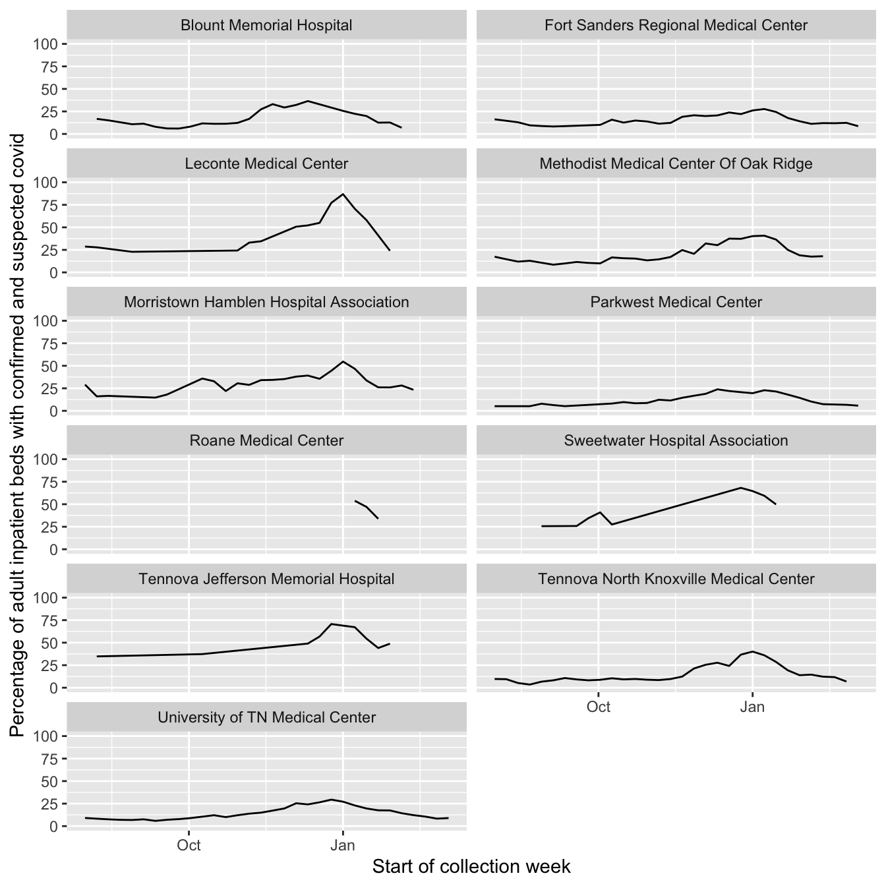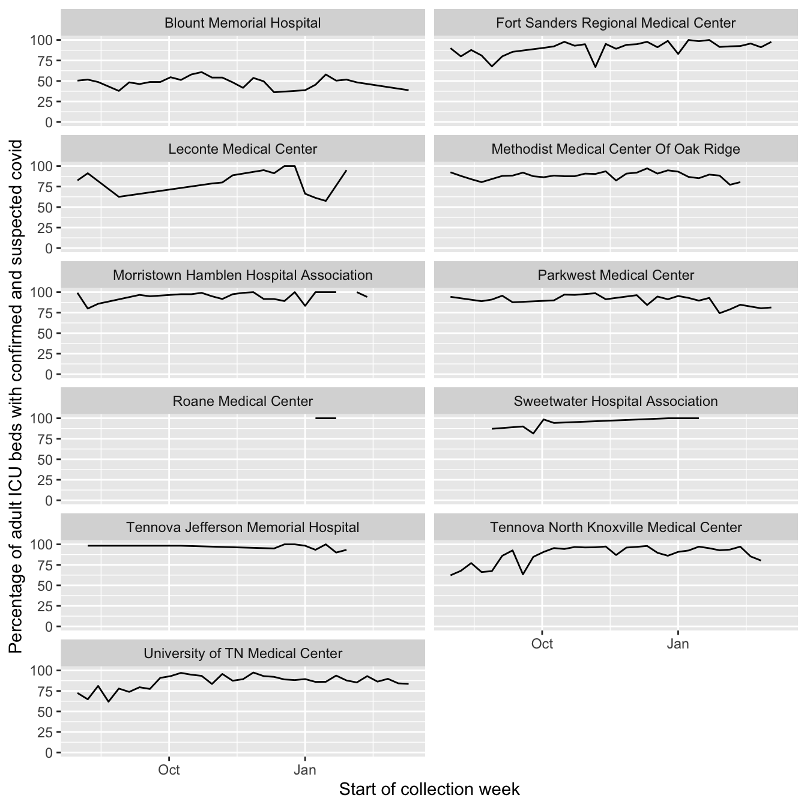
Demographics
Tennessee releases information on demographics of individuals with covid. Age is broken out below, but here are other categories. All terminology follows that used by the state, including terms like race and sex (assumed to be binary by them). Information on the population in each category come from the US Census. It appears that the categorization of “one or more races” vs “other/multiracial” differs radically between the US Census and TN’s health stats (the census seems to put far fewer people into their category, so the proportions computed seem radically out of line: all other groups have 2-7% infection rate, for example, while this demographic has 40% infection rate if the denominator from the census is right for the numerator from the state). Because the data seem so different, and the scale obscures info for other groups, I am omitting that group here. Another major caveat in these data is potential unequal access to testing, which will lead to worse underestimates of covid incidence in for groups of people who can get tested less readily.
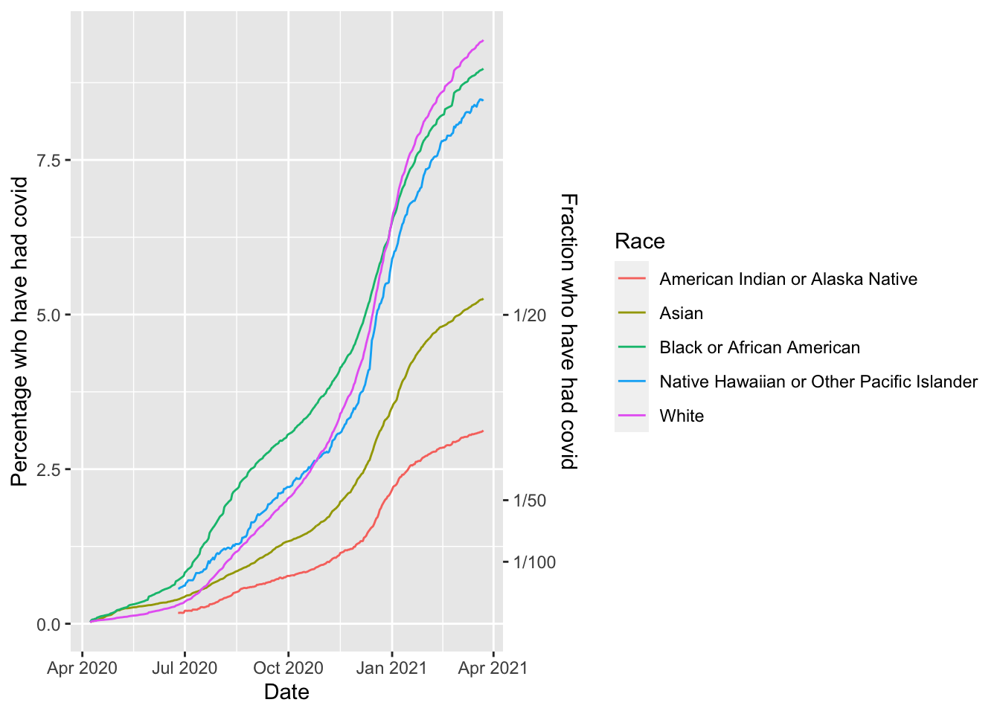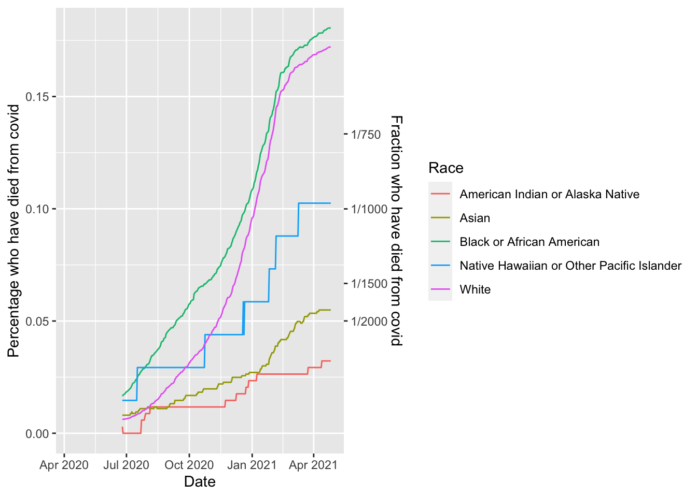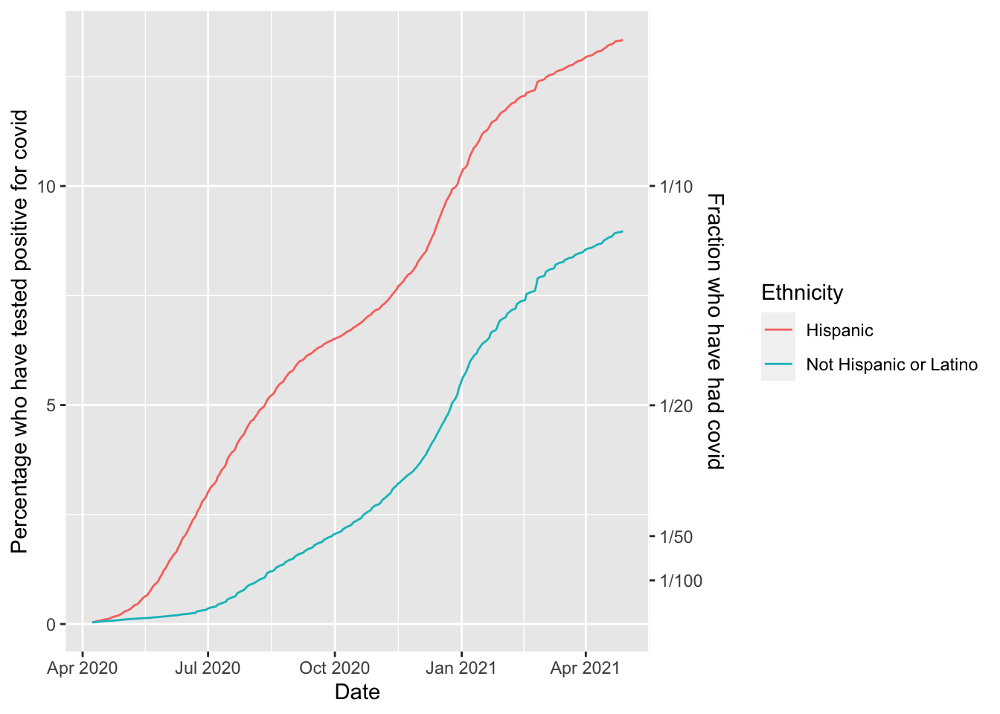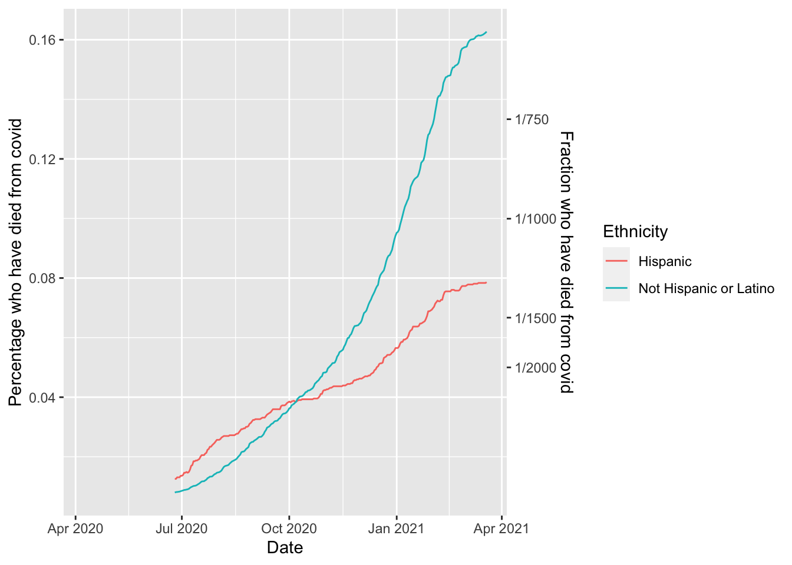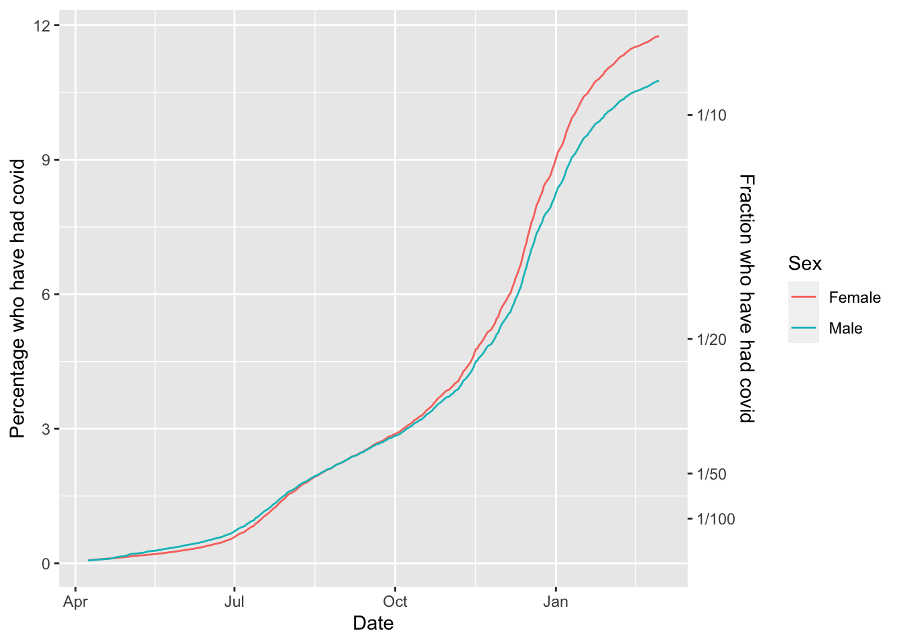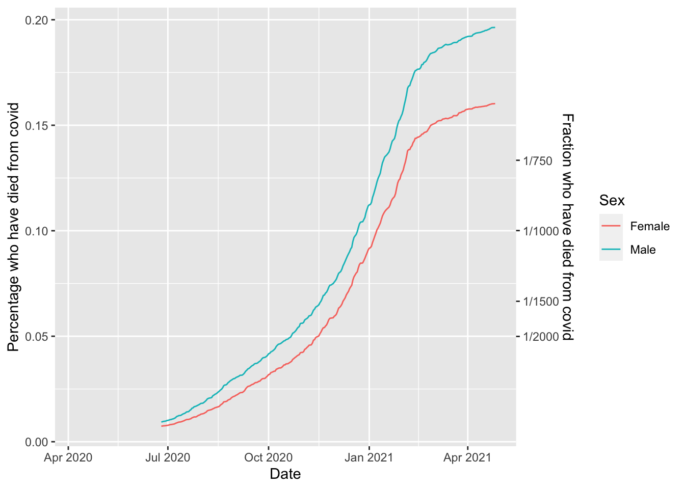
University of Tennessee, Knoxville
Another question is what is happening at UTK. There is official information available at https://www.utk.edu/coronavirus/guides/data-monitoring-and-contingency-options, of which I show one figure below. There are also reports in the news media, such as this article from Aug. 18 showing that 23 of 91 football players (over 25%) have had positive covid tests since returning but before the start of classes. New York has set a threshold of 100 cases or 5% positive tests for colleges to move online; UT has had over that many active cases; its positivity rate is not officially public (as of now), though this site provides such information. The numbers of cases and tests have dramatically dropped recently at UT; one troubling suggestion for why is reports of “pacts” by students not to get tested locally so as to avoid notifying the university. This violates the agreement students made before classes started and puts the local community, both on and off campus, at greater risk. UT is trying tests of sewage and saliva tests: upcoming saliva tests are scheduled at https://calendar.utk.edu/covid-19_testing.
For a detailed look at UT, check out https://sites.google.com/view/utk-covid19, for work done on an individual basis by a UTK student, Alex Zukowski. UT’s official dashboard is at https://www.utk.edu/coronavirus/guides/data-monitoring-and-contingency-options/ but has less detail. I use the daily testing counts UT used to provide to Alex Zukowski as well as UT’s weekly reports of the totals for that week. To convert to daily data, I divide the weekly reports by seven.
UT is now publishing results of saliva tests. ALL students residing in dorms, fraternities, or sororities have agreed to testing, but in some cases over half are missing mandatory testing. No sanctions have been announced yet. This table shows testing results of saliva tests:
Testing at UT is also a question. The plot below shows reported number of tests at the student health center, based on data aggregated by Alex Zukowski (see above). Note that these are the raw number of reported tests: a value of 20 means out of all 30,0000 UTK students, only 20 individuals were tested that day at the student health center. Not included here are athletes, who have much more frequent testing.
The dotted line on the plot shows the date of a news story about covid pacts among students to avoid getting tested locally so they could avoid quarantine or isolation. Spread by infected individuals matters, even if they personally are asymptomatic, so personal actions to avoid testing and quarantine / isolation can lead to disease spread to others who might not be so lucky, so it’s very disappointing to hear of this. The drop in testing after that line may be purely coincidental, but it is a remarkable change in trend. Other universities test more intensely; for example, U. of Illinois tests several thousand per day, not a few dozen. Not being an epidemiologist I do not want to weigh in on what strategy is optimal, but it is a remarkable contrast in approaches. UT is also starting to report on mandatory saliva-based testing, where they ask everyone residing in a dorm for a saliva sample, pool 3-5 individuals in a tube, test each tube, and then bring back individuals from pools that tested positive for individual testing. From 19.1 to 73.4 percent of the students listed as being in these dorms do not contribute samples.
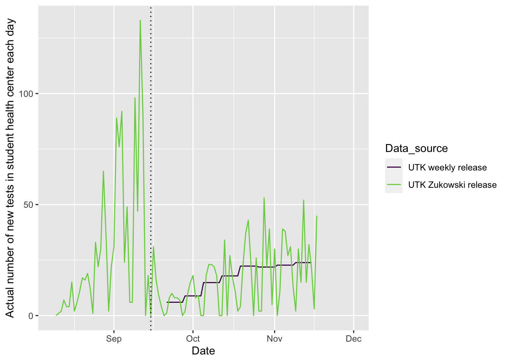
As for the county data, the positivity rate can also be important: if all the tests show up positive, likey symptomatic, cases, then there are likely other people being missed. The New York Times reports on July 14, 2020, that, “As education leaders decide whether to reopen classrooms in the fall amid a raging pandemic, many are looking to a standard generally agreed upon among epidemiologists: To control community spread of the coronavirus, the average daily infection rate among those who are tested should not exceed 5 percent.” The horizontal black line below shows that guidance. The CDC provides thoughts about possible testing strategies at colleges and universities here but not a firm number for how much testing they believe is necessary.
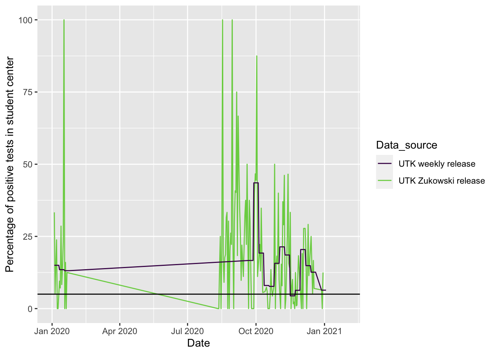
We can also use the UTK saliva data to estimate the number of new cases: the proportion of students who ultimately test postive out of those tested by the saliva scans. Given poor compliance, the true proportions may be much higher than this (if students want to endanger others by not isolating, they may avoid testing if they think they have been exposed). Depending on the date of the test, between 1 of every 41 to 1 of every 1017 of students who contributed samples had active covid infections.
At the date of the most recent set of samples, from 2021-04-25, UTK reported 22 active cases overall (this presumably includes the 11 positive diagnostic tests from the sampling). If the pool of students from this sample is representative of the 30,000 person student body as a whole, that would mean there would be 117 actual active cases among the students on that date.
I am converting the saliva test info to new cases per 100K to correspond with the Harvard Global Health Institute’s standards for guidance of control (yellow is community spread; red is the highest risk possible in their guidance – for a county, that would mean “stay-at-home orders necessary” according to them, though how that translates into actions on a college campus is different). These guidelines are for daily new cases but the saliva data are active cases at a point in time. I am adopting the assumption that Knox County uses that new cases are only active for 14 days, so I’m computing the new case estimate as 1/14 the active case estimate. The green, yellow, and orange bands are the same as for Knox and Anderson+Roane counties above; the red band looks much thicker because it has the same lower bound as the others but no maximum, and some of the estimates for UTK are outside the range for the county-wide data. I include the 95% confidence interval for the estimate of new cases per 100,000 people, though this is an underestimate of the uncertainty (are dorms good random samples or are results clustered, are students who refuse testing similar to those who get tested, etc.).

We can also see the compliance rate of students with testing. Before starting, all students signed a pledge showing their willingness to abide by community standards. Those in residence at UT agreed to saliva testing.

Local webcams
UT’s webcam of the Rock, a campus landmark, to see how UT’s community is choosing to protect others. You will have to click to start the stream. Some members of the community engage in hate speech on the Rock – it is often quickly replaced by more positive messages, but it may be present on the Rock temporarily.